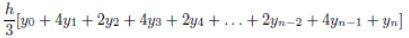
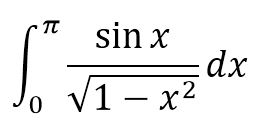

Київський національний університет імені Тараса Шевченка
Факультет інформаційних технологій
Кафедра програмних систем та технологій
студент групи IПЗ-42
Бровенко Вадим
2021
Для выполнения задач был выбран язык программирования Scheme, т.к. он является строго функциональным и прост в освоении благодаря упрощенному синтаксису языка.
Среда разработки была выбрана DrRacket, так как она является бесплатной и имеет понятный и упрощенный интерфейс.
Найти корни нелинейного уравнения вида x = ln(x) + 2. Поиск приближенного значения хотя бы одного корня уравнения f(x) = 0 на отрезке [a; b] осуществлять методами перебора и касательных. Значения а, b интервала выбрать самостоятельно. Сравнить результаты решений двумя методами.
; =========== zadanie 1 =============
; заданная функция
(define (func x)
(+ (log x) 2))
; значение точности e
(define e 0.001)
; производная от заданной функции
(define (deriv)
(lambda (x)
(/ 1 x)))
; вторая производная от заданной функции
(define (deriv-2)
(lambda (x)
(/ -1 (expt x 2))))
; вычисление слудующего приближения корня
(define (newton-next f)
(lambda (x)
(- x (/ (f x) ((deriv) x)))))
(define num_x 0) ; номер корня приближения
; метод Ньютона
(define (newton-method f guess)
(let ((next-guess ((newton-next f) guess))) ; поиск следующего корня
;(cond ((< (abs (/ (f guess) ((deriv) guess))) e)
(cond ((< (abs (f guess)) e) ; если f(приближение) меньше заданной точности, значит найдено
(display "Find! ") (display "x") (display num_x)
(display " = ")(display guess)
(display " func(x)= ") (display (f guess)))
(else
(display "x") (display num_x) (display " = ") (display guess) (newline)
(set! num_x (+ num_x 1))
(newton-method f next-guess))))) ; переход на след итерацию со следующим приближением
; Ньютон: проверка заданного интервала
(define (newton-interval f a b)
(display "======Newton method======") (newline)
(cond ((> (* (f a) ((deriv-2) a))) ; условие сходимости для начального приближения левой границы
(display "first_approx: left_border") (newline)
(newton-method f a)
)
((> (* (f b) ((deriv-2) b))) ; условие сходимости для начального приближения правой границы
(display "first_approx: right_border") (newline)
(newton-method f b)
)
(else
(display "error borders"))))
; Метод простых итераций
(define (iterate-method f guess)
(let ((next (f guess)))
(cond ((<= (abs (- guess next)) e) ; если разница между приближение и f(приближение) меньше точности
(display "Find! ") (display "x") (display num_x) ; значит приближение найдено
(display " = ")(display guess) (display "; f(x)=")(display (abs (- guess next))))
(else ; иначе переход к следующей итерации со следующим приближением
(display "x") (display num_x) (display " = ") (display guess) (newline)
(set! num_x (+ num_x 1))
(iterate-method f next)))))
; Метод итераций: проверка заданного интервала
(define (iterate-interval f a b)
(newline)
(display "======Iterate method======") (newline)
(cond ((< (abs((deriv) a)) 1) ; условие сходимости для начального приближения левой границы
(display "first_approx: left_border") (newline)
(iterate-method f a)
)
((< (abs((deriv) b)) 1) ; условие сходимости для начального приближения правой границы
(display "first_approx: right_border") (newline)
(iterate-method f b)
)
(else
(display "error borders"))))
(display "Лаб №3 задание 2.1:")
(newline)
;(newton-interval func 0.01 1.1)
(iterate-interval func 1 2)
Для проверки достоверности результатов для расчета нелинейных уравнений методом Ньютона был использовн онлайн сервис https://planetcalc.ru/7748/ и для метода итераций https://planetcalc.ru/2824/
С помощью формулы Симпсона интеграл функции f(x) от а до b приближенно выичисляется в виде:
где h = (b - a) / n для какого-нибудь четного целого числа n, yk = f(a + kh). Увеличение n повышает точность приближенного вычисления. Определить процедуру, которая принимает в качестве аргументов f, a, b, n и возвращает значение интеграла, вычисленного по формуле Симпсона.
(define PI 3.14159)
; вычисление подынтегрального выражения
(define (integral x)
(define root (- 1 (* x x)))
(/ (sin x) (sqrt root)))
;(cond ((<= root 0)
; 0)
; ((= (sqrt root) 0)
; 0)
; (else
; (/ (sin x) (sqrt root)))))
(define i 0) ; счетчик элементов
(define result 0.0)
; метод Симпсона
(define (simpson-method f a b h n)
(cond ((> a b) ; при достижении конца промежутка вывести результат
(display "result: ")(display (* (/ h 3) result)) (newline))
((= i 0) ; если первый элемент
(display "первый:\t\t")
(set! result (+ result (f a))) ; то добавить функцию от элемента
(display "x") (display i) (display " = ") (display a)
(display "; y")(display i) (display " = ") (display (f a))(newline)
(set! i (+ i 1)))
((= i n) ; если последний элемент
(display "последний:\t")
(set! result (+ result (f a))) ; то добавить функцию от элемента
(display "x") (display i) (display " = ") (display a)
(display "; y")(display i) (display " = ") (display (f a))(newline)
(set! i (+ i 1)))
((= (modulo i 2) 0) ; если четный элемент
(display "четный:\t\t")
(set! result (+ result (* 2(f a)))) ; то добавить функцию от элемента * 2
(display "x") (display i) (display " = ") (display a)
(display "; y")(display i) (display " = ") (display (f a))(newline)
(set! i (+ i 1)))
((not(= (modulo i 2) 0)) ; если нечетный элемент
(display "нечетный:\t")
(set! result (+ result (* 4(f a)))) ; то добавить функцию от элемента * 4
(display "x") (display i) (display " = ") (display a)
(display "; y")(display i) (display " = ") (display (f a)) (newline)
(set! i (+ i 1)))
)
(if (<= a b) ; выполнять рекурсивный вызов пока левая граница меньше правой
(simpson-method f (+ a h) b h n))
)
;(display "Лаб №3 задание 2.2:") (newline)
(define n 6)
(simpson-method integral 0 PI (/ (- PI 0) n) n)
На скриншоте приве
Для сравнения результатов был использован онлайн сервис https://math.semestr.ru/optim/simpson.php для решения интегралов методом Симпсона.
В лабораторной работе были реализованы процедуры для решения задач:
При выполнении 3 лабораторной работы возникали трудности с пониманием как работают математические методы, которые необходимо было реализовать.